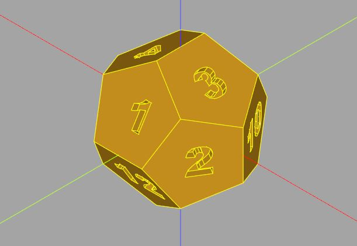

柏拉圖多面骰
November 27, 2021CadQuery 專注於使用 BREP 來表現模型，然而，OpenSCAD 的 CSG 表現在某些場合，也有它的優點，如果要為 CadQuery 補充些什麼，一些可融入 CadQuery 的 CSG 表現，自然就會是一個重點，有幾點理由可以支持這麼做：
- 便於將 OpenSCAD 的一些經驗過渡至 CadQuery 使用。
- 有些模型本身就適合 CSG 的風格。
- 雖然 BREP 的面是平滑表現，有時你就是想控制面的細節（例如建立 UV 球）。
cqmore.polyhedron
基於這幾點理由，cqMore 提供了 cqmore.polyhedron 模組，提供了一些基本多面體，或者是基於點、切面等來建立多面體的函式。
在基本多面體方面，首先可以看到用來建立柏拉圖多面體的 tetrahedron、hexahedron、octahedron、dodecahedron、icosahedron 函式，它們都有個 detail 參數，若設定為大於 0 的數，會對每個面進行細分，然後將各個頂點推至球面，當然，這時已經不是正多面體了，然而這可以作為建構球的不同方式。
例如，相對於 UV 球，另一種常見的球是 ISO 球，可以使用正二十面體為出發點，將每個三角面細分得來：
from cqmore.polyhedron import icosahedron
from cqmore import Workplane
radius = 1
polyhedra = Workplane()
for detail in range(5):
polyhedra.add(
Workplane()
.polyhedron(*icosahedron(radius, detail))
.translate((2 * radius * detail, 0, 0))
)
cqmore.polyhedron 的函式都會傳回 Polyhedron 實例，它是個 NamedTuple，具有 points 與 faces 成員，因為本質上就是個 tuple，結合 * 解構，就可以撰寫出 polyhedron(*icosahedron(radius, detail)) 這種風格的程式碼，閱讀上就是建立 icosahedron 多面體。
結合 BREP/CSG
方才談到，CadQuery 專注於使用 BREP 來表現模型，而 cqMore 的目標之一，是補充 CSG 的部份，因此在 CadQuery 加上 cqMore 後，你就可以選擇其一，或者是兩者併用。
以這邊的柏拉圖多面體來說，你可以指定不同的多面體，以及不同的 detail，建立更多樣的多面體；接著，運用 CadQuery 面選擇的功能，選擇細分的面，在每個面上建立數字，這就構成了有趣的骰子：
from cadquery import Face
from cqmore import Workplane
from cqmore.polyhedron import tetrahedron, hexahedron, octahedron, dodecahedron, icosahedron
number_of_faces = 12 # 柏拉圖多面體面數 4, 6, 8, 12 或 20
radius = 10
font_name = 'Arial Black'
font_size = 5
font_distance = 1
detail = 0
platonic_polyhedra = {
4: tetrahedron,
6: hexahedron,
8: octahedron,
12: dodecahedron,
20: icosahedron
}
dice = (Workplane()
.polyhedron(
*platonic_polyhedra[number_of_faces](radius, detail)
)
)
# 選取全部的面
faces = dice.faces().vals()
nums = len(faces)
texts = Workplane()
for i in range(nums):
texts.add(
# 在每個面的幾何中心建立文字
Workplane(faces[i])
.workplane(origin = faces[i].Center())
.text(
str(nums - i),
font_size,
-font_distance,
font = font_name
)
)
# 多面體與文字的減集
dice = dice.cut(texts)
show_object(dice)
以上程式會建立一個 12 面體骰子：

當然，以上程式碼並沒有處理數字的順序，如果你願意，可以再進一步處理，試著讓數字的下一個，出現在目前數字的「對面」（我懶得處理了…XD）
下圖是調整了以上程式的一些參數，建立的 80 面骰子：